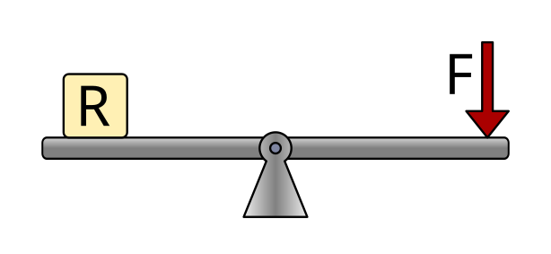
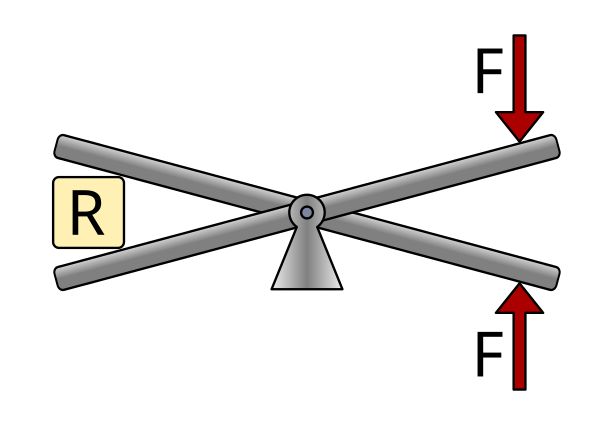
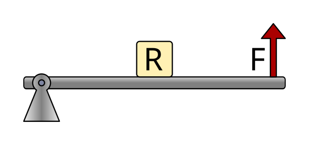
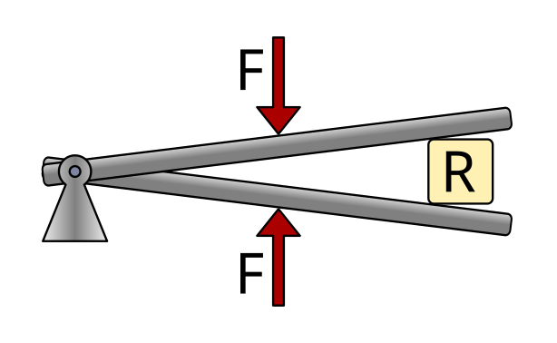

: Índex: `palanques '¶
La palanca ** ** és una màquina senzilla formada per una barra rígida ** ** que gira al voltant d’un punt de suport anomenat ** fulcro **.
Les palanques es poden utilitzar per realitzar diverses funcions:
- ** Transmetre una força ** o un desplaçament d’un punt a un altre. Aquest és el cas de les tisores que transmeten la força i el moviment des d’algun didal adaptats a la mà, a la làmina de tall.
- ** Augment de la força ** Exercit. Aquest és el cas d’un trencanous o d’algunes alicates.
- ** Augmenta el desplaçament ** aplicat. Aquest és el cas d’un rem o d’una barra de pesca.
Depenent de la situació de la força aplicada (F) de la resistència a moure (R) i al fulcro (△), podem distingir tres tipus de palanques.
Primeres palanques de gènere¶
Les primeres palanques de gènere tenen suport al mig de la barra, entre la força aplicada i la resistència.
{kind=link}

Exemples d’aquest tipus de palanca són un balancí, unes tisores o alicates.
{kind=link}

Palanques de segon gènere¶
El segon gènere les palanques de gènere tenen resistència al mig de la barra, entre el Fulcro i la Força Aplicada. El fulcro és en un extrem.
{kind=link}

Exemples d’aquest tipus de palanca són una carreta de rodes, un trencanous o un llevataps.

Palanques del tercer gènere¶
Les palanques del tercer gènere tenen la força aplicada al mig de la barra, entre el fulcro i la resistència. El fulcro és en un extrem.

Exemples d’aquest tipus de palanca són les pinces en forma, el nostre avantbraç quan alça la mà o una barra de pesca.
{kind=link}

Càlcul de forces i distàncies¶
La fórmula per calcular les forces i les distàncies implicades en una palanca és igual als parells produïts per les forces. El parell és el producte d’una força per a la seva distància fins al punt de suport, de manera que la fórmula es manté de la manera següent.

Ésser
F1 = força aplicada 1
D1 = distància de la força 1 al punt de suport
F2 = resistència o força 2
D2 = distància de la força 2 al punt de suport
Les distàncies es poden mesurar en metres, centímetres, mil·límetres, polzades, etc. Però les dues distàncies sempre s’han de mesurar amb la mateixa unitat.
Les forces es poden mesurar en quilograms-Fork o en newtons, sempre que ambdues forces es mesurin amb la mateixa unitat.
L’exercici s’alça¶
Com a exemple, calcularem la força feta per les alicates a les quals apliquem una força de 10kgf al mango, amb les distàncies següents.

El primer pas serà escriure les dades del problema i traduir els valors de distància a la mateixa unitat, per exemple, en mil·límetres.
A continuació, escrivim la fórmula i substituïm els valors coneguts.
Finalment, esborrem l’equació i calculem el valor del desconegut amb les mateixes unitats que havien conegut la força.
Exercici de xafarder¶
En aquest exercici, calcularem la força que s’ha de dur a terme per aixecar una carretilla que porta dins d’un pes de 40 kgf. Les dimensions del camió simplificat són les següents.

El primer pas serà escriure les dades del problema. En aquest cas, no cal convertir les unitats de distància, ja que ambdues distàncies les donen a centímetres.
Com podem veure, per calcular la distància de la força 1 al punt de suport, cal afegir les dues distàncies que apareixen al dibuix.
A continuació, escrivim la fórmula i substituïm els valors coneguts.
Finalment, esborrem l’equació i calculem el valor de la desconeguda (F1) amb les mateixes unitats que havien conegut la força, la força de quilogram.